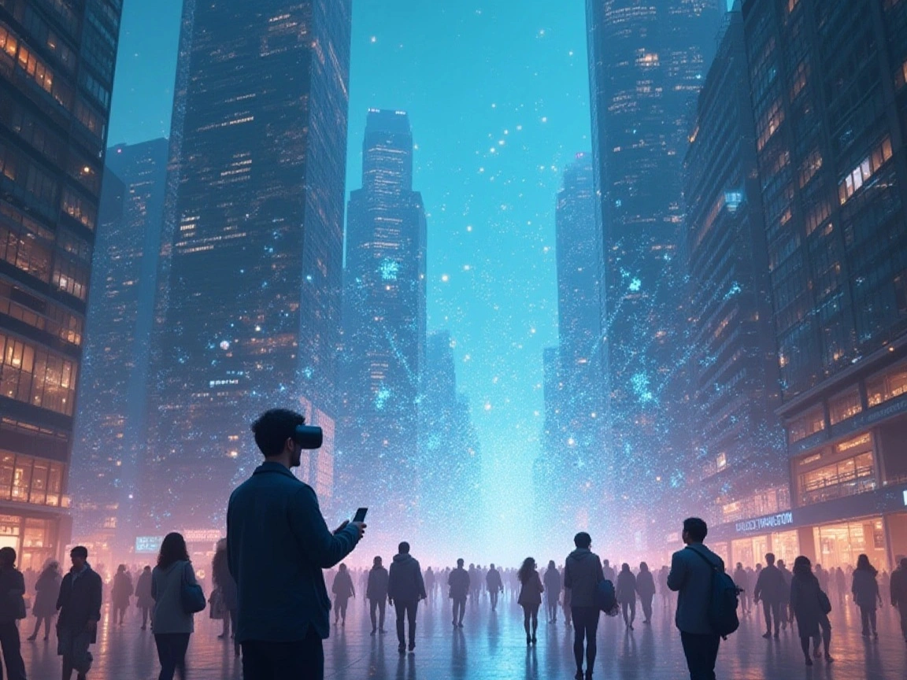

IMAGINARIUM
Majalah digital pertama yang merayakan logika dan rasa — dari mahasiswa, untuk penjelajah ide.
Selamat datang di IMAGINARIUM. Kami hadir sebagai ruang hibrida tempat teknologi dan fiksi bersatu. Edisi perdana ini mengusung tema "Eksplorasi Dunia Imajinasi Tanpa Batas". Temukan artikel mendalam tentang seni membangun karakter, fenomena fiksi digital, serta suara mahasiswa Teknik Informatika UHAMKA.

"Perubahan ini melahirkan Renaisans Imajinasi, di mana jarak antara penulis dan pembaca semakin tipis."
Di era digital saat ini, fiksi tidak lagi hidup di halaman kertas, tetapi berpindah ke layar yang bisa disentuh, digeser, dan dijelajahi. Perubahan ini melahirkan "Renaisans Imajinasi". Majalah digital bukan hanya tempat membaca cerita, tetapi juga menghadirkan pengalaman yang lebih interaktif.
Peran teknologi menjadi penting dalam membentuk pengalaman tersebut. Desain UI/UX yang rapi dan navigasi yang jelas membantu pembaca menikmati cerita tanpa hambatan.
Lebih dari itu, fiksi digital membuka ruang baru bagi mahasiswa untuk mengekspresikan diri. Ide-ide yang sebelumnya hanya tersimpan kini dapat dituangkan dan dibagikan lebih luas.
Namun, Renaisans Imajinasi ini juga membawa pertanyaan: bagaimana kita memposisikan diri di tengah arus teknologi? Di lingkungan akademik seperti Teknik Informatika UHAMKA, kita bukan hanya pengguna teknologi, tetapi juga calon perancangnya.

Artikel 3: Layar Majalah Digital
Di Balik Layar Majalah Digital: Antara Ide, Proses, dan Identitas.
Baca
Artikel 4: Teknologi Mengubah Cara Kita Mengalami Fiksi
Teknologi modern juga telah mengubah cara fiksi dibuat, disebarkan, dan dinikmati.
BacaAda artikel yang ingin kamu usulkan?
Sampaikan ide atau masukan kamu tentang konten IMAGINARIUM. Kami baca setiap masukan!
Kirim Masukan